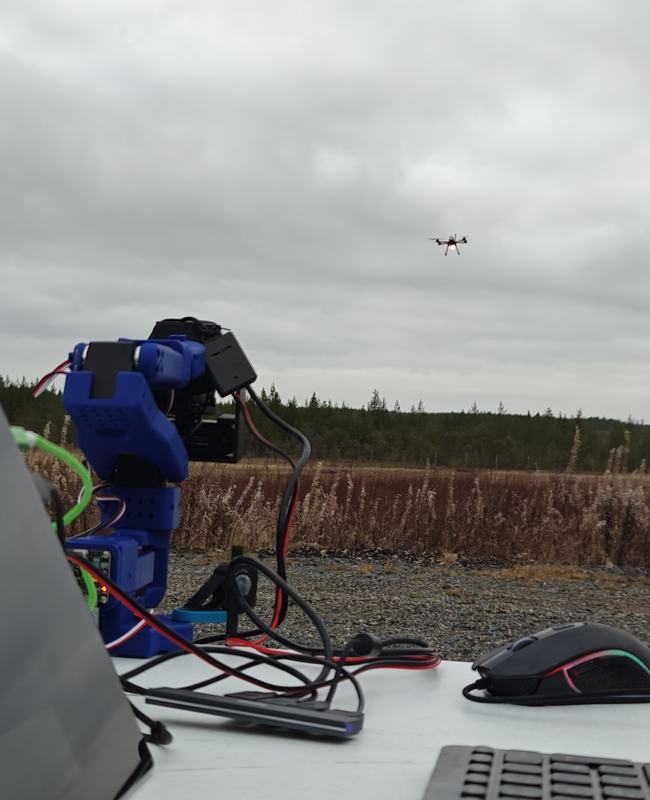
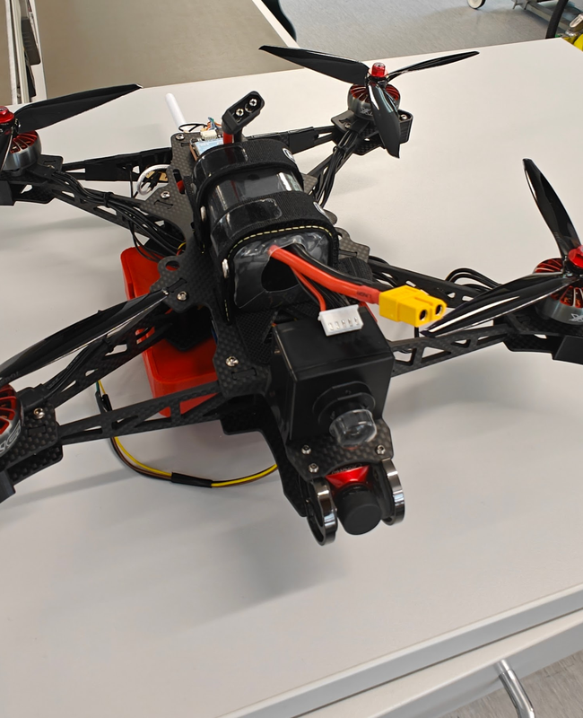
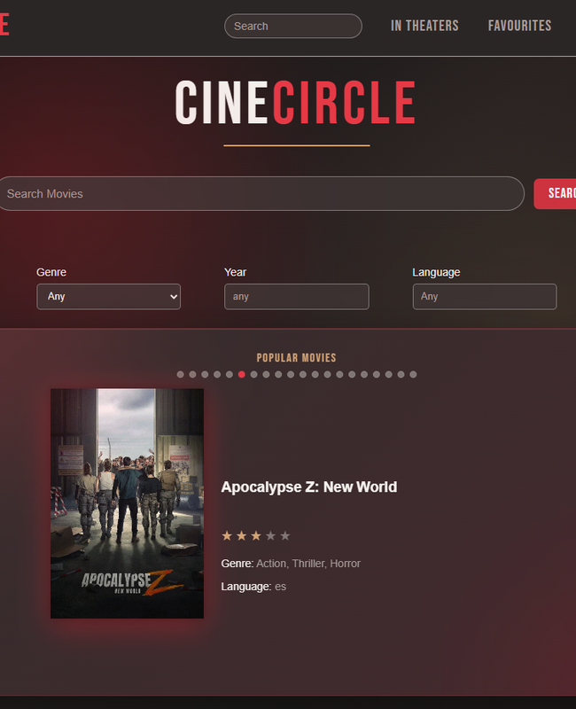
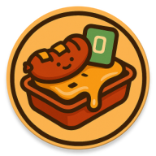
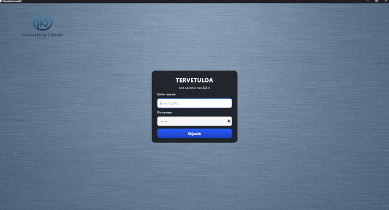
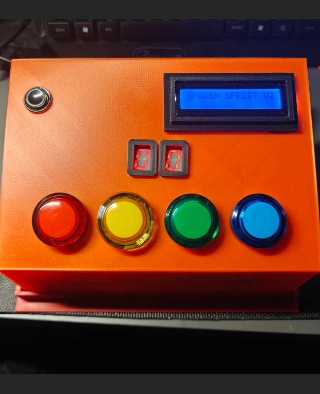

Software Developer
Hi! I’m Juha Jermalainen, "a software developer with a background in ICT engineering (Oamk)".
After 20 years in restaurant‑industry customer service,
I’m transitioning into tech with strong communication skills, problem‑solving ability,
and experience working under pressure.
I'm passionate about software development, modern technologies, and smart home
automation. I enjoy building practical, efficient solutions and exploring how
technology can improve everyday life. Through school, industry and personal projects,
I’ve gained hands‑on experience in programming, application development, and
software design.
My goal is to build a career in software development where I can combine
customer‑focused thinking with technical skills and continuous improvement.
Skills
Experience
Education
20 years of customer service experience have built strong skills in resolving issues quickly, calmly, and with the end‑user’s needs in mind.
I naturally explore new technologies and tools, quickly getting up to speed and applying what I learn to build clean, practical solutions.
Balancing a career transition, demanding projects, and family responsibilities has strengthened my ability to work independently, stay organized, and consistently deliver results with a high level of commitment.

An ongoing project in the DefTech North program with Noptel Oy: flying a drone over a laser beam instead of a radio link.
Real-world system integration with industry partners.

A summer 2026 project at OAMK in cooperation with Oamk Dronelab: a quadcopter that finds a red balloon with computer vision, flies to it and lands next to it without pilot input.
My first step into robotics and machine vision, built together with Valtteri Sipilä.

A group project in OAMK's web development course: a full-stack movie app built with React, Node.js, PostgreSQL and Docker, using the TMDB API for movie data.
As the most active committer in a team of four, I strengthened my React, REST API and Git teamwork skills.

A location-based Android application built with Kotlin with AI assistance that helps find
restaurants serving Uunimakkara for lunch near you.
Uunimakkara Tutka was developed as a comprehensive learning project to
master Android development and modern software architecture.
Built with AI assistance, this project deepened my Kotlin and Android architecture skills while exploring modern AI-driven development practices.

This project was a group assignment in OAMK’s Software Application course. It involved creating an ATM system with a C++/Qt desktop client and a Node.js/Express REST API backed by a MySQL database.
As the most active contributor, this project strengthened my experience with backend development, databases and team collaboration.

In autumn 2025, we completed an exciting project in OAMK’s Software Application course:
SpedenSpelit V2, a reaction‑based game built on an Arduino microcontroller.
This project was a fantastic opportunity to combine theory with practice. It strengthened
my
technical skills while improving teamwork and problem‑solving abilities.
© 2026 Juha Jermalainen. Made with help of GreatStack